Dashboard UI
- kita download dulu file thema example dari bootstrap
- kita copy file css dan js untuk Dashboard
- kita putuskan untuk mengelola dashboard tidak perlu pakai controller
- karena dashboard hanya menampilkan halaman dashboardnya saja
- kita bisa hapus dashboard controllernya
- kita copy isi dashboard view dari dashboard dari bootstrap
- Hasil :
kita edit tampilan dashboard
- yang kita butuhkan bagian navbar adalag dashboard dan order saja, yang lain hapus
- Hasil :
- kita buat folder baru layouts didalam folder dashboard didalamnya main.blade.php
- kita pindakan isi dari dashboard/index.blade.php ke dashboard/layouts/index.blade.php
- header yang dashboard/layouts/main.blade.php kita pindahkan kita ganti include
- buat file baru dashboard/layouts/header.blade.php
-
- kita dashboard/layouts/main.blade.php
- kita ubah navbar menjadi include dan buat file baru dashboard/layouts/sidebar.blade.php
- kita ubah dalam main jadi yield
- didalam index.balde.php
- buka file dashboard sidebar.blade.php

resource controller
- jika kita menganggap sebuah eloquent di model kita sebagai resource itu merupakan sebuah kumpulan sebuah aksi yang biasanya kita bikin untuk melakukan sesuatu terhadap resource kita
- misal apk kita punya foto / movie, kan biasanya kita akan melakukan CRUD
- karena ini sudah umum dilakukan sebagai use case. laravel membuatkan sebuah route khusus untuk melakukan CRUD, yang dinamakan resource controller pada saat kita ketik make:controller pada saat diartisan, kita tambahkan --resource diakhirnya
- sehingga otomatis dibuatkan controller yang sudah punya route ke patch ini :
- nanti didalam route web.php tidak perlu bikin route 1 per 1 untuk yang diatas
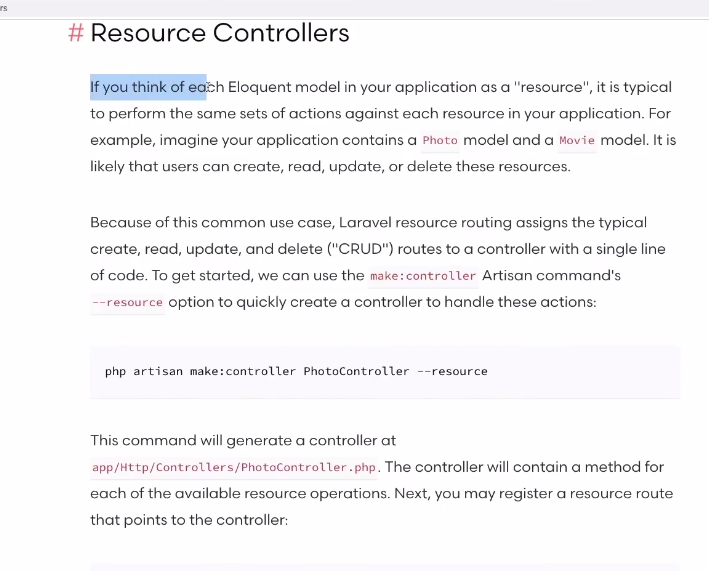
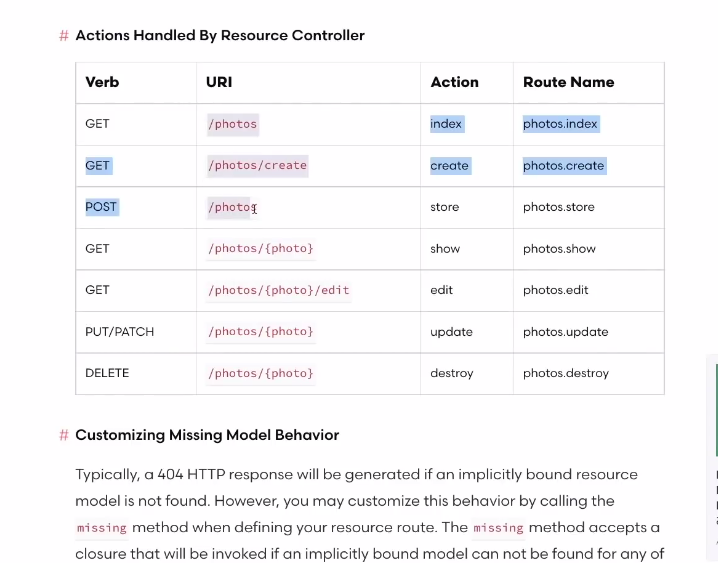
Specifying The Resource Model
- kita bisa langsung menentukan route model bunding untuk controller baru kita
- kita akan memberi tahu bahwa controller yang kita punya selain bentuk resource dia juga langsung terhubung dengan model yang mana
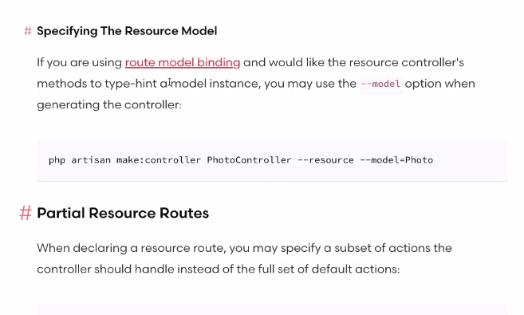
kita coba
- ketik di artisan:
- didalamnya sudah terhubung dengan model post dan ada banyak method
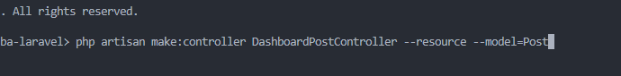
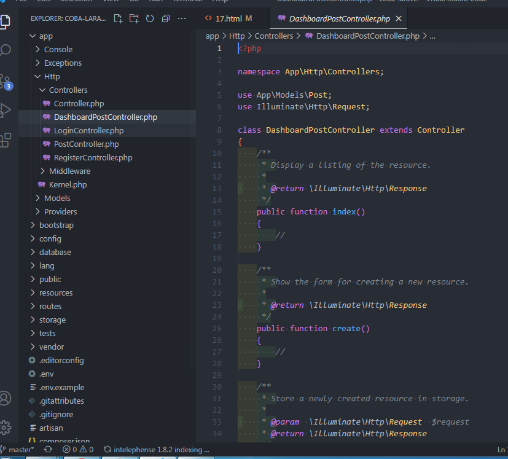
- kita masuk ke route web.php
- kita buka DashboardPostController
- Hasil :
- kita masuk lagi ke DashboardPostController
- kita buat folder baru di folder dashboard/posts/index.blade.php
- isinya sama kan dengan index dashboard index nya
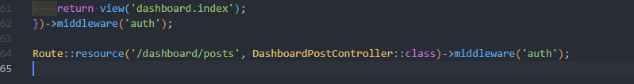
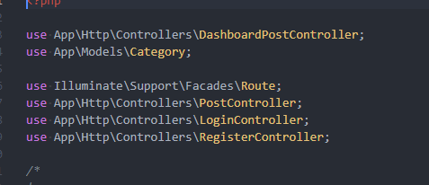
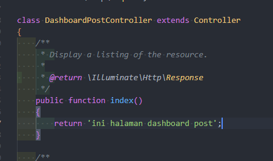
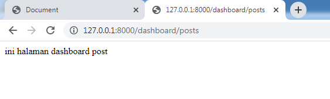
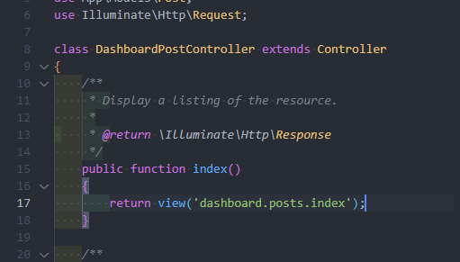
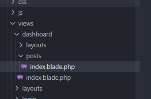